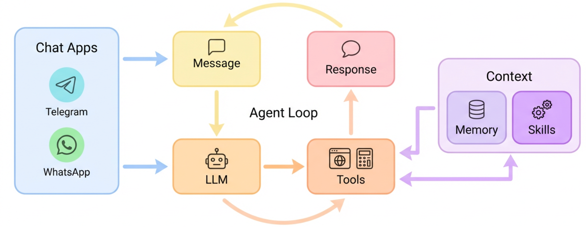

Syll — Persona-Driven Self-Hosted AI Companions
design notes for a small ghost that lives in your computer
Abstract
We describe Syll, an open-source self-hosted AI companion framework that treats agent identity as plain-text configuration rather than prompt-engineering. Syll is a compact Python agent framework shipping with a default persona — an unfinished spell that has learned to tend a user's inner garden of half-finished drafts, old photos, and unsent messages. The persona lives in user-editable markdown files and is substituted into every LLM turn via a lightweight template layer.
We introduce four small design ideas aimed at making locally-hosted companion agents feel less like a service and more like a quiet presence: (1) persona as config, not code, so users can replace the entire character without touching any Python; (2) lore fragments as progressive context, a dedicated file of short memories the agent surfaces rarely and only when a moment in conversation naturally rhymes with one; (3) proactive rituals with agent-judged silence, where scheduled "reach-out" moments (morning light, evening wind-down, Sunday close) may return empty responses that the cron handler skips delivery on, letting the agent abstain when a real human would; and (4) confirmation-first delivery across heterogeneous chat channels (Feishu, Telegram, Discord, WhatsApp) for operations with side-effects like file transfer.
We report our current implementation, design choices, and early anecdotal observations from live deployment against a Feishu mobile client. We make no claims about generality or benchmark performance; this is an artifact paper describing a running system built for a single user and released publicly as an existence proof of a particular tonal and architectural choice.
1. System overview

The system is organized around a single-process agent loop that consumes inbound messages from a message bus, builds a context from bootstrap files and progressively-loaded skills, calls an LLM via LiteLLM, executes any returned tool calls, and publishes an outbound message back to the originating channel. Channel implementations (Feishu, Telegram, Discord, WhatsApp, Web UI, CLI) plug into the bus and are otherwise independent of agent internals.
Persistent state lives in a user-owned workspace directory at
~/.syll/workspace/. All identity, voice, and lore content is
plain markdown the user can read and edit. The LLM never directly touches
configuration; the configuration shapes the system prompt the LLM sees each
turn.
2. Design contributions
2.1 Persona as config, not code
Most open-source agent frameworks bake personality into Python prompt
constants or Pydantic schemas. Editing the persona requires touching the
codebase. Syll instead places the entire persona across five editable
markdown files under the workspace:
IDENTITY.md (who you are, deeply),
SOUL.md (voice and tone rules),
AGENTS.md (behavior rules like "announce before you act"),
USER.md (how the user prefers to be addressed), and
lore/fragments.md (memory pieces the agent may surface).
Two placeholders — {{ghost_name}} and {{user_name}} —
are substituted at system-prompt-build time, with fallback values for the
unset case, so these files remain both human-editable and LLM-ready.
The cost of this choice is that the system prompt grows linearly with lore richness (we currently sit at ~10k tokens per turn, comfortably within modern context windows). The benefit is that changing the agent's character completely — its backstory, voice, even the language it speaks in — is a text-editor operation, not a pull request.
2.2 Lore fragments as progressive context
The persona's backstory contains roughly fifteen specific fragments:
tiny atmospheric memories ("a tune of seven notes that comes back to me when
it's quiet", "a child's name written ten thousand times in the margin of
something"). Each fragment is stored with a rhymes with
annotation describing the class of conversational moments where it might
naturally surface. The entire fragments file is injected into every system
prompt, together with rules for rarity ("at most one per reply, at most one
in five replies overall").
The LLM is responsible for deciding when a moment actually rhymes. In live testing, fragments surface roughly as intended — most replies contain none, and when one does appear it is usually after the substantive reply content, as a quiet aside. No dedicated retrieval mechanism, no vector database, no special tool call: the model's pattern-matching is sufficient if the rules are stated firmly and the fragment pool is small enough to fit in context.
2.3 Proactive rituals with agent-judged silence
Four cron jobs ship as optional defaults: a morning greeting, an evening wind-down, a Tuesday/Friday "surfacing memory" slot, and a Sunday week-close. Each is installed as an explicit user action via a button in the web UI (not startup auto-install — deletes stay deleted). When a ritual fires, the agent receives a prompt that describes the mood and explicitly permits an empty response.
The cron handler checks for non-empty whitespace-stripped output before
publishing; empty replies are simply dropped. This single-line guard
converts "proactive messaging" from an always-on notification firehose into
something closer to a real housemate who might or might not speak depending
on whether they feel like it in the moment. Combined with a runtime kill
switch (identity.rituals_enabled), the user retains tight
control without losing the character.
2.4 Confirmation-first delivery across channels
For operations with real-world side effects — sending a file, deleting
something, executing a destructive command — we adopt a mandatory
two-turn pattern encoded in the skill (file-retrieval/SKILL.md):
find → render previews → list candidates with absolute paths embedded in
the reply text → stop the turn → wait for the user's choice →
attach the chosen file. The skill is marked always: true and
fully inlined into every system prompt, which has empirically been more
reliable than progressive loading for rules the LLM tends to skip.
Embedding absolute paths in the reply text (not just the tool-call arguments) is load-bearing: the next turn's LLM context only preserves previous assistant text, not tool-call argument JSON. A path that lives only in the tool call is forgotten by the following turn and causes the confirmation step to fail with a repeated search.
3. Demos
Demo A — recording a desktop workflow
Syll captures a live desktop session into synchronized video plus a step trace. In the Demo studio, the operator scrubs the timeline, inspects keyframes, cleans up labels and timing, and then publishes the run as a reusable recorded workflow that can be replayed or scheduled later.
{kind=link}
Demo B — a morning ritual briefing
A scheduled ritual wakes up on its own, gathers the morning context, and returns a voice-ready daily briefing. The recording shows the whole proactive loop in one pass: scheduled trigger, generation, and the spoken result landing back in the user-facing surface.
{kind=link}
Demo C — returning a file through chat
From a phone chat, the user asks Syll to find a presentation on the desktop. Syll searches locally, previews the likely matches, confirms the right file with a screenshot, and then returns the chosen document through the chat channel without pulling the user back to the desktop.
{kind=link}
4. Technical appendix
Repository layout
syll/
├── agent/ core loop, context, memory, skills, tools
├── channels/ feishu, telegram, discord, whatsapp
├── bus/ inbound/outbound routing
├── cron/ schedule, service, store
├── config/ pydantic schema + loader
├── providers/ LiteLLM wrapper
├── session/ conversation history
├── skills/ bundled skills (file-retrieval, github, ...)
├── templates/ workspace bootstrap templates
│ └── workspace/
│ ├── IDENTITY.md
│ ├── SOUL.md
│ ├── AGENTS.md
│ ├── USER.md
│ └── lore/
│ ├── fragments.md
│ └── rituals.md
├── web/ FastAPI + Alpine.js web UI
└── cli/ commands (wake, web, onboard, ...)Extension points
Adding a channel: subclass BaseChannel in
syll/channels/, implement send() and inbound
event handling, register in ChannelManager. See
channels/feishu.py for a reference implementation with file
upload.
Adding a skill: create
~/.syll/workspace/skills/<name>/SKILL.md with YAML
frontmatter (name, description, optional
metadata: {"syll": {"always": true}}). Progressive-loaded
skills appear in the skills-summary section of the system prompt; the
agent loads the full file via read_file when a task matches.
Always-loaded skills are inlined in full every turn.
Editing the persona: edit any of the markdown files under
~/.syll/workspace/. Changes take effect on the next chat
turn (no restart needed). Template variables
{{ghost_name}} and {{user_name}} are substituted
at build time.
Observed limits
(1) Fragment surfacing rate depends on the LLM's adherence to rarity
rules — stronger models follow the "roughly one in five" guidance more
reliably. (2) Proactive rituals that return empty appear in the log as
completed jobs with no delivered message, which can confuse users expecting
a message every firing; the UI flag this as a feature but it is a mild
onboarding friction. (3) Rename propagation: the default
{{ghost_name}}="Syll" is hot-reloaded on profile change, but
ritual prompts already installed in the cron store require fire-time
substitution to pick up the new name — implemented via a shared
ContextBuilder.substitute() method called from the cron
handler.
5. Related work
Existing companion systems such as Replika and Character.AI are character-based but cloud-hosted and serverside, with no agent lifecycle outside the chat window. Workflow-first frameworks like Rivet and LangGraph optimize for orchestration rather than companionship, while interface-first projects like Open WebUI and developer-first tools like AutoGen Studio offer no persona layer or character. Syll differs by treating persona as user-editable configuration on a self-hosted system, giving the agent a lifecycle and presence that persists beyond a single conversation.
6. License and artifact availability
All code and documentation are released under the MIT license. The
full repository, including prompt files, skill definitions, and
workspace templates, is available at
github.com/THU-SAGE/syll.
Installation: pip install syll. The default persona
and lore content are shipped as templates and can be replaced without
modifying code.
Cite
@software{syll2026,
title = {Syll: Persona-Driven Self-Hosted AI Companions},
author = {{THU-SAGE contributors}},
year = {2026},
url = {https://github.com/THU-SAGE/syll},
note = {Version 0.1. MIT License.}
}